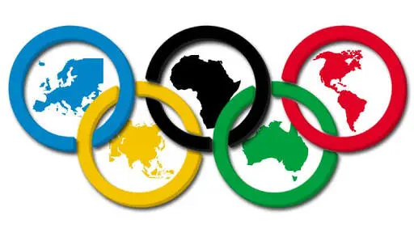
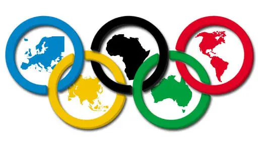

Hakkında
Yıl 2022 de kurulmuştur.Özellikle oyun sektöründe olmak üzere bir çok alanda reklam argesi yürüterek olabildiğince insanla bir çok markayı tanıştırmıştır
Yıl 2022 de kurulmuştur.Özellikle oyun sektöründe olmak üzere bir çok alanda reklam argesi yürüterek olabildiğince insanla bir çok markayı tanıştırmıştır
Reklam bir ürün veya hizmetin satışlarının çoğalması ve geniş kitleler tarafından duyulması için tasarlanan pazarlama faaliyetlerinin tamamıdır. Aynı zamanda, ürün ve hizmetlerin nerede, ne fiyata, nasıl, alınacağı ve nasıl kullanılacağı hakkında tüketiciye bilgi veren, ayrıca ürün ve hizmetler arasında seçme hakkını gösteren, yönlendiren tanıtım biçimidir. Daha fazla kişi ve tüketiciye ulaşmak için yapılan reklamların birbirinden farklı ve değişik çeşitli yolları bulunmaktadır. Reklamın amacı nedir ve reklam nedir merak edenler için reklamın detayları yazımızda. Reklamın Satıcıda Amacı; Tüketiciyi ya da aracıya bilgi vermek, ürün ya da hizmeti hatırlatmak ve ürünü satışa ikna etmek, Mal ya da hizmetin uzun vadeli satışını sağlamak, Toptan ve perakendeci satıcıya satılan ürün ve hizmette yardımcı olmak, Mal ya da hizmete karşı talebi arttırmak, Talebin yaratacağı fiyat esnekliğini en aza indirmek ve kalıcı, belirli bir fiyat prensibi oluşturmak. Reklamcılar Tarafından Reklamın Amacı; Mal, ürün ve verilen hizmet hakkında hedef kitleye bilgi vermek ve ürünün geniş kitleler tarafından tercih edilmesini sağlamaktır. Ütün, hizmet veya mal geniş kitleler tarafından tercih edilirse tanınırlığı ve güvenirliği artacaktır. Aynı ürünün, mal veya hizmetin satışını yapan diğer rakiplere göre farklılık yaratmak ve bahsi geçen ürünün satışının yapılması için reklam yapılır. Reklamı yapılan malın, hizmet veya ürünün satın alma isteğini yaratmak ve satışları arttırmak, markanın piyasada daha iyi tanınmasını sağlamak, rakipleri arasında fark yaratmak için reklamcı ürünün reklamını yapar. Malın veya ürünün kullanımı hakkında tüketicilere bilgi vermek ve marka hakkında derin bilgiler edinilmesi için reklam yapılır. Firmaların ürünlerle ilgili mesaj değişikliklerini tüketiciye ulaştırmak, ürün hakkında yenilikler ve piyasaya sunulan hizmetleri daha iyi tanıtmak için reklamcı reklam yapmak ister. Marka imajı yaratmak ve marka değerini yükseltmek, markanın diğer ürünler arasında piyasasının kalıcılığını sağlamak ve daha güvenilir ürünlerle hizmet vermek için reklam yapılma yolu tercih edilir. Mal ve üründeki kalite imajını korumak ve İşletmenin saygınlığını arttırmak için bir ürünün reklam faaliyetleri ile satışını yapmak oldukça önemlidir. Aynı zamanda tüketicinin tercihlerini değiştirmek ve marka adına kalıcı bir tüketici tercihi oluşturmak için reklam yapmak firma ve reklamcılar için oldukça önemlidir.